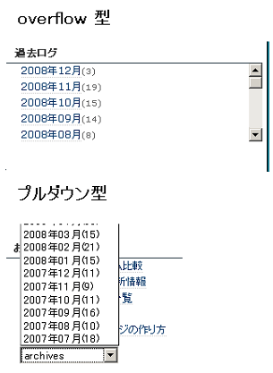
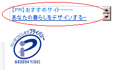
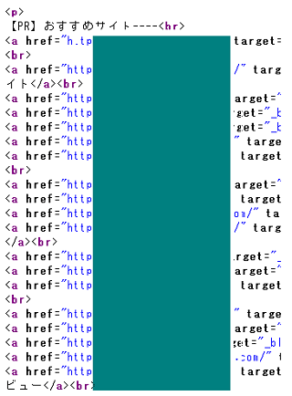
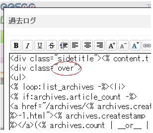

過去ログを「overflow」でブログカスタマイズ
以前に過去ログをプルダウン化してブログカスタマイズしてみたのですが、今回は「overflow」を指定し、スクロール型の擬似フレームでカスタマイズしてみました。
overflowの場合、長くなった過去ログの箇所にスクロールバーが出現してすっきりします。

「overflow」と「プルダウン」タイプの比較
この overflow とプルダウンを比較してみますと、プルダウンの方が場所をとらず、またスクロールバーなども表示されないため、スタイリッシュなイメージはあります。
一方、overflowでカスタマイズした際、隠しリンク的なリンクファームのペナルティーを受けてしまう可能性があるかもしれません。
以前、サイバーエージェント関連のサイトで、検索インデックスが大量に削除されてしまったことがありましたが、Internet Archive でペナルティーを受ける前のデータを見てみると、小さめの擬似フレームで一見すると何気ない感じの「PR情報」があります。

けれども、html ソースを見てみると、このような感じで数十のリンク先が詰め込まれていて、スクロールするとずらっと相互リンク先がならんでます。

このような形で相互リンクしていたのがグーグルにばれてしまったみたいで、ペナルティーを受けたようなのですが、１日か２日ぐらいで削除されたインデックスは復活したみたいです。
このような外部サイトでなく、内部リンクとして過去ログをカスタマイズする場合は、リンクファームにはあたらないと思いますが、リンク先が隠れてしまうのは避けた方がよいかもしれません。
一方、プルダウンでカスタマイズの場合は、やはり <a href= のリンクタグではなくて、スクリプトでのリンクになるので、内部リンクにカウントされなくなってしまう可能性があるかもしれません。
overflowでのブログカスタマイズ方法
このoverflowをスタイルシートに指定してのブログカスタマイズ方法ですが、シーサーブログの場合は過去ログタイトルはそのままで、その下に class属性を side で指定しているdivタグがあると思います。その side を任意の class 属性に書き換え、スタイルシートで overflow を設定すれば簡単でした。

当ブログでは class 属性の side を over と書き換えてますが、英数小文字ならなんでもよいはずです。
擬似フレームなoverflowのＣＳＳ
あとはスタイルシートに指定したクラス属性の設定をすればスクロールバーが表示されます。このブログはこんな感じです。
.over {overflow:auto; height:93px;}
overflow はスクロールを指定する overflow:scroll; などありますが、オートに指定しておけばぶなんに表示されるはずです。「高さ」は周りのカテゴリと同じ高さを指定しておけば違和感がなくなるでしょう。
このブログでは過去ログのリンクは、トップページをこの overflow のスクロールするタイプ、記事ページではプルダウンに指定していますが。SEO対策的にはトップページにプルダウンの過去ログリンクは避けた方がよい気もしますが、この overflow のスクロールバーなら通常のa hrefになるため特に問題はないはずです。
- フッターのブログカスタマイズ css
ブログカスタマイズもあれこれやってきましたが、今回はフッターの簡単カスタマイズに挑戦してみました。お手本にしたのは身近なところで、シーサーブログ管理画面の下の方のやつです。 - 続きを読むにブログカスタマイズ
ブログカスタマイズというほどのことではないかと思いますが、ブログの追記部分で「続きを読む」を使用している人もけっこう多いようです。 でも、続きを読むのかたちでブログを作成してしまうと、やっぱ、カテゴ... - タグページをブログカスタマイズ
ブログカスタマイズも難易度が高いのはやっぱタグページなんじゃないかなって気がします。ブログ初心者にとってはけっこう難しいようなんですが、がんばって挑戦してみました。 シーサーブログでのタグページの私... - 過去ログの内部リンクをSEO配分
更新すればするほど増加していくブログの過去ログ内部リンクですが、SEO的にこのままほったらかしてもいいものだろうか？という疑問も出てきてしまいます。内部リンクが増えていくのはいいと思うんですけど、やっ...